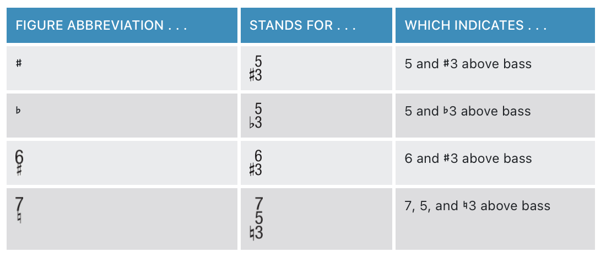
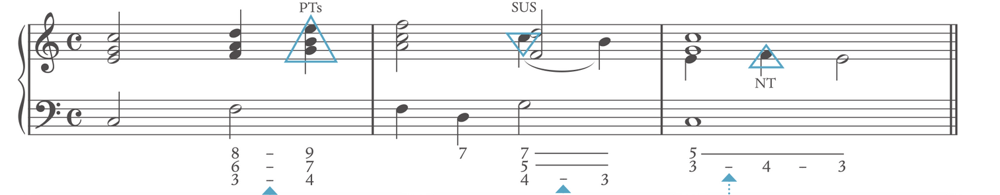
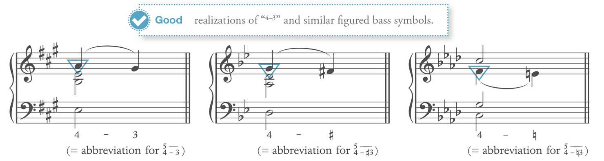
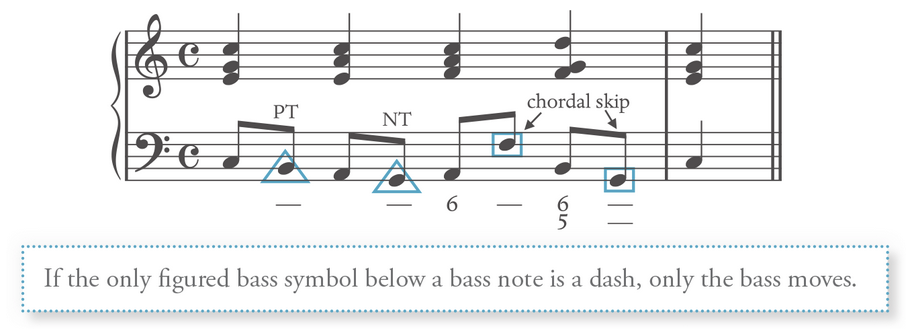
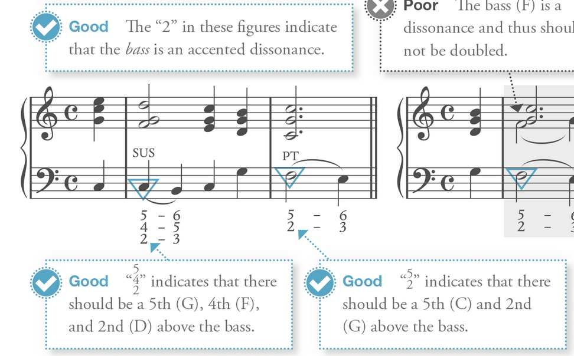
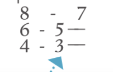
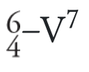
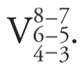
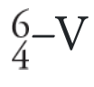
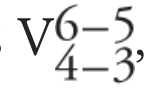

Notation
Notation Link to heading
Figure Accidental Link to heading

Accidental without number always refers to the 3rd
Figure bass notation Link to heading
Triad: Link to heading
(inversion) Root: 53 - N/A First: 63 - 6 Second: 64 - 64
Seven chords: Link to heading
(inversion) Root: 753 - 7 First: 653 - 65 Second: 643 - 43 Third: 642 - 42 - 2
Figure 9: 953 (9 is the embellishing tone for the next chord) Figure 4-3: 54 - 53
Aalways follow the figure to determine the chord and its supposed inversion: Technically, the notation of the inversion reflect the figure notation, for the sake of identification, go with figure bass first then identify the chords
Figure Bass in writing Link to heading
Embellishing Figured bass Link to heading



Only the bass moves in an embellishing tone with a dash below it. The upper voice remains stationary.

Bass should not be doubled when there is a 2 in the figure bass
Different way of notating Cadential 64 Link to heading





Pedal Notation Link to heading
1̂ Ped ——-
1̂